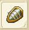
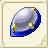
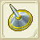
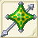

| 盾作成 | ||||
| 画像 | 名称 | 性能 | 材料 | |
| 台湾表示 | ||||
| 盾作成Lv1 | ||||
| バックラー | DEF+6〜+11 AVD-5 RSS+10〜+12 |
銅4 麻1 |
||
| 小圓盾 | ||||
| スモールシールド | DEF+8〜+17 AVD-5 RSS+8〜+10 |
銅6 モミ20 |
||
| 小型盾 | ||||
| 盾作成Lv2 | ||||
|  | スクトゥム | DEF+12〜+22 AVD-5 RSS+20〜+24 |
銅8 バルサ20 モミ20 |
|
| 板盾 | ||||
| カイトシールド | DEF+15〜+28 AVD-5 RSS+16〜+20 |
銅7 鉄3 バルサ20 イエローメランチ20 |
||
| 鳶盾 | ||||
| 盾作成Lv3 | ||||
| グリペスシールド | DEF+19〜+33 AVD-5 RSS+30〜+36 |
鉄7 銀3 バルサ20 モミ20 イエローメランチ20 |
||
| ?渦重盾 | ||||
| ゴシックシールド | DEF+23〜+39 AVD-5 RSS+24〜+30 |
銅3 鉄4 銀4 純銀3 イエローメランチ20 |
||
| 哥特盾 | ||||
| 盾作成Lv4 | ||||
| ソルジャーシールド | DEF+28〜+44 AVD-5 RSS+40〜+48 |
銅4 鉄4 銀4 純銀4 ツガ20 |
||
| 士兵盾 | ||||
| ホプロンシールド | DEF+32〜+50 AVD-5 RSS+32〜+40 |
銅2 鉄2 銀3 純銀5 金5 | ||
| 重盾 | ||||
| クイーンブレス | RCV+2〜+5 CRI-1〜+1 CTR-1〜+1 HIT-1〜+1 AVD-1〜+1 クエストで使用 |
純銀5 銀1 金1 チタン鉱石20 フローズンアイリス20 |
||
| 盾作成Lv5 | ||||
| スケイルシールド | DEF+39〜+55 AVD-5 RSS+50〜+60 |
鉄6 銀5 純銀4 金3 ヒバ20 |
||
| 蜥蝪盾 | ||||
| ポップライトシールド | DEF+42〜+61 AVD-5 RSS+40〜+50 |
鉄6 銀6 金4 白金3 | ||
| 反光之盾 | ||||
|  | ウルリヒシールド | DEF+28〜29 HIT-2 FP+103〜108 AVD-5 RSS+50〜55 |
純銀2 金2 白金2 ぐみの木20 アルマイト3 |
|
| 聖者之盾 | ||||
| 盾作成Lv6 | ||||
| ウィングシールド | DEF+50〜+66 AVD-5 RSS+60〜+72 |
純銀6 金6 白金4 アカマツ20 |
||
| 風之盾 | ||||
| 獅子の盾 | DEF+54〜+72 AVD-5 RSS+48〜+60 |
銀8 金4 ミスリル鋼4 ヒバ20 アカマツ20 |
||
| 獅子盾 | ||||
| 盾作成Lv7 | ||||
| ガーディアン | DEF+59〜+77 AVD-5 RSS+70〜+84 |
鉄5 銀5 純銀5 白金5 ミスリル鋼5 | ||
| 防守之盾 | ||||
| リマーカブル | DEF+83〜+105 AVD-5 HIT-10 RSS+56〜+70 |
金5 白金5 ミスリル鋼15 マイティナイト1 |
||
| 黄金之盾 | ||||
| 水龍の盾 | DEF+100 ATK+20 |
ミスリル鋼10 マイティナイト2 魔族のクリスタル2 錆びた盾1 |
||
| 水龍之盾 | ||||
| 盾作成Lv8 | ||||
| ミラーフェンダー | DEF+69〜+88 AVD-5 RSS+80〜+96 |
銀6 純銀6 ミスリル銀10 | ||
| 鏡之盾 | ||||
| エクスペディター | DEF+61 AVD+8 RSS+34〜+38 |
ミスリル銀20 魔族のクリスタル1 |
||
| 力量之盾 | ||||
| ガーディアン＋ | DEF+60〜+79 ATK+4〜20 AVD-5 RSS+65〜+78 |
ミスリル鋼9 ミスリル銀10 スギ20 永久氷石20 ブルードラゴンの鱗20 |
||
| 防禦之盾+ | ||||
| 盾作成Lv9 | ||||
| ロイヤルクレスト | DEF+85〜+107 AVD-5 RSS+90〜+108 |
純銀5 ミスリル鋼5 ミスリル銀5 レグネシウム5 |
||
| 漆�K之盾 | ||||
| ヴォイドハーデス | DEF+60 FP-50 HIT+2 AVD+10 RSS+37 |
白金5 レグネシウム10 マイティナイト1 魔族のクリスタル3 |
||
| 火龍之盾 | ||||
| 盾作成Lv10 | ||||
| クルセイダー | DEF+100 AVD-5 RSS+100〜+120 聖なる盾消費FP変化 |
ミスリル鋼5 ミスリル銀5 レグネシウム5 オリハルコン3 |
||
| �K暗之盾 | ||||
| デバステーター | DEF+90 STN+20 FP+80 RSS+90 カウンター消費FP変化 |
金5 オリハルコン8 魔族のクリスタル5 誓いの証3 |
||
| 勇者之盾 | ||||
| 盾作成Lv11 | ||||
|  | ヘスシールド | DEF+138 HIT+9 AVD-10 RSS+100 |
アルマイト7 ミスリル銀6 レグネシウム6 ダマスクス鉱3 ランドクローラーの甲殻2 |
|
| 突猛盾 | ||||
|  | バッヘム | DEF+114 CRI+6 AVD-5 RSS+141 |
アルマイト5 オリハルコン3 レグネシウム6 ダマスクス鉱4 誓いの証2 |
|
| 重型防禦盾 | ||||